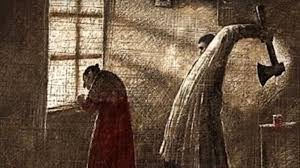
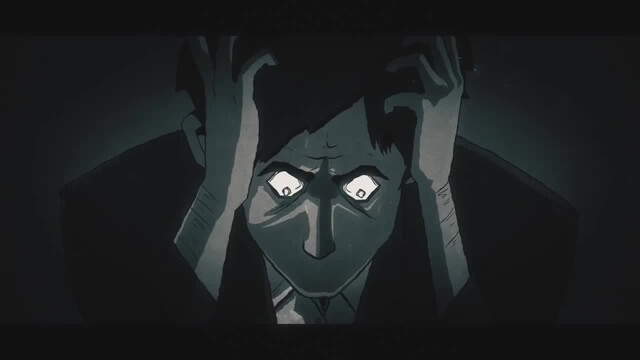
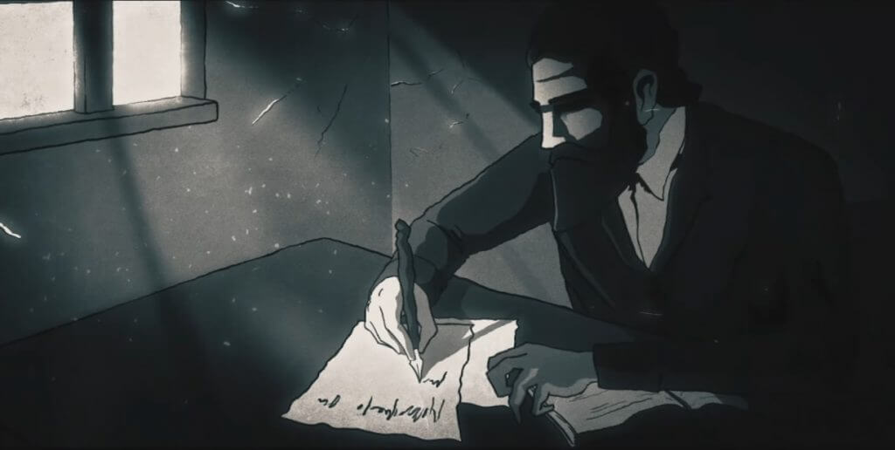

هي رواية اجتماعية نفسية واجتماعية فلسفية ضمن أدب الجريمة من تأليف الروائي الروسي فيودور دوستويفيسكي. نُشرت الرواية لأول مرة في المجلة الأدبية الرسول الروسي عام 1866 على شكل سلسلة أدبية بحلقات متسلسلة على 12 شهرا بعد سنة، نُشرِت طبعة منفصلة ومحسنة الهيكل عن إصدارات المجلة الأدبية ضمت اختصارات وتغييرات أسلوبية أدرجها المؤلف ضمن إصدار الكتاب. تعد الرواية ثاني أطول روايات دوستويفيسكي بعد عودته من منفاه في سيبيريا وأفضل رواياته خلال فترة نضجه الأدبي، كما تصنف واحدة من أعظم الأعمال الأدبية في التاريخ.
روديون رومانوفيتش راسكولنكوف هو طالب حقوق سابق يعيش في فقر شديد في حجرة صغيرة بالإيجار في سانت بيترسبيرج . تخلى راسكولنكوف عن كل محاولاته في إعالة نفسه ورسم خطة لقتل وسرقة المرابية العجوز إيلينا إيفانوفنا . أثناء التفكير في خطته ، تعرف على سيميون زاخاروفيتش مارميلادوف وهو سكير قام بتبديد ثروة عائلته الصغيرة . يخبره مارميلادوف عن ابنته المراهقة سونيا والتي قررت أن تصبح عاهرة لتعول العائلة . يتلقى راسكولنكوف رسالة من والدته تتحدث فيها عن قدومهم لزيارته في سانت بيترسبيرج وتشرح مشكلة أخته دونيا والتي تعمل مدبرة منزل ورئيس العمل سيئ النية . للهرب من موقفها الصعب وأملا في مساعدة أخيها ، اختارت دونيا الزواج من عاشق غني . غضب راسكولنيكوف بشدة داخليا من تضحيتها حيث شعر بأنها فعلت مثل ما كانت سونيا مجبرة أن تفعله.
بعد الكثير من التأني، تسلل راسكولنكوف إلى شقة أليونا إيفانوفنا حيث قتلها بفأس كما قتل أيضا أختها نصف الشقيقة ليزافيتا والتي كانت شاهدة على مسرح الجريمة مصادفة. لصدمته من فعلته، لم
يستطع سرقة سوى حفنة من الأشياء وحقيبة صغيرة تاركا الكثير من ثروة المرابية كما هي. يهرب راسكولنكوف بعد ذلك وبسبب تسلل من الأحداث يستطيع الهرب دون أن يراه أحد

بعد جريمة القتل غير المتقنة ، أصيب راسكولنكوف بحالة حمى وبدأ القلق بشدة حيال القتل . خبأ راسكولنكوف الأشياء المسروقة والحقيبة تحت صخرة وحاول بيأس أن ينظف ملابسه من الدماء أو من أي أدلة ثم أصيب بالحمى لاحقا في هذا اليوم بعد أن اتصل بصديقه القديم رازوميخين . مع قدوم وذهاب الحمى في الأيام التالية تصرف رازوميخين كما لو كان يريد خيانته حيث أظهر ردود أفعال غريبة لأي ذكر لقتل المرابية والذي أصبح حدثا في المدينة وانتشر الحديث عنه . في هذيانه أخذ راسكولنكوف يمشي في شوارع سانت بيترسبيرج حيث جذب الانتباه إليه أكثر وأكثروعن علاقته بالجريمة . في أحد مرات مشيه في المدينة التقى بمارميلادوف الذي ضربته حافلة على نحو قاتل . أسرع راسكولنكوف لمساعدته ونجح في نقله إلى شقة عائلته حيث يموت مارميلادوف بين أيدي ابنته سونيا وهو يطلب منها أن تسامحه . يعطي راسكولنكوف آخر عشرين روبل معه (من المال الذي أرسلته له والدته) إلى زوجة مارميلادوف المصابة بالسل كاترينا إيفانوفنا قائلا أن هذا رد لدين صديقه

في الوقت نفسه تصل والدة راسكولنكوف بلخريا ألكسندروفا وأخته أفدوتيا رومانوفنا (دونيا) إلى المدينة . كانت دونيا تعمل مدبرة منزل حتى هذه اللحظة لكنها أجبرت لكونها كبيرة العائلة على الزواج من إيفانوفتش . كان إيفانوفيتش رجلا متزوجا ثريا لكنه كان منجذبا إلى جمال جسد دونيا وإلى صفاتها الأنثوية وعرض على دونيا الثراء والهروب معها . بخزي، هربت دونيا وخسرت مصدر دخلها فقط لتقابل بيوتر بيتروفيتش وهو رجل ذو دخل محدود . كان بيتروفيتش قد تقدم للزواج من دونيا وبالتالي سيؤمن لها ولعائلتها أمانا ماديا بشرط أن تقبله سريعا وبدون أسئلة . ولهذه الأسباب قدما إلى سانت بيترسبيرج لمقابلة بيتروفيتش وللحصول على موافقة راسكولنكوف . إلا أن بيتروفيتش كان قد اتصل ب راسكولنكوف وهو في حالة من الهذيان وقدم نفسه كرجل أحمق معتد بنفسه ووقح . رفضه راسكولنكوف فورا كزوج محتمل لأخته وأدرك أنها وافقت عليه فقط لتساعد عائلتها
مع تقدم الرواية ، يتعرف راسكولنكوف على المحقق بورفيري والذي بدأ يشك في كونه على علاقة بحادثة القتل بناء على أسباب نفسية فقط . في نفس الوقت ، نشأت علاقة عفيفة بين راسكولنكوف وسونيا. سونيا على الرغم من كونها عاهرة إلا أنها ممتلئة بالأخلاق المسيحية ولم يدفع بها إلى هذه المهنة سوى فقر عائلتها . في هذه الأثناء يتمكن كل من رازوميخين وراسكولنكوف من إقناع دونيا بعدم الاستمرار في علاقتها مع بيتروفيتش والذي اتضحت شخصيته الحقيقة بأنه متآمر وحقير . في هذه الأثناء يظهر إيفانوفيتش من جديد في المشهد حيث أتى إلى مقاطعة بيترسبيرج للبحث عن دونيا حيث يقول أن زوجته مارفا بيتروفنا قد ماتت وأنه ينوي إعطاء دونيا كميات كبيرة من الأموال بدون مقابل . دونيا وبمجرد سماعها الأخبار ترفض لشكها في خيانته
مع استمرار مقابلة راسكولنيكوف وبورفيري تظهر دوافع راسكولنيكوف للجريمة ويصبح بورفيري أكثر ثقة من كون الرجل مذنبا إلا أنه لا يمتلك دليلا قويا أو شاهدا لدعم شكوكه كما أن رجلا آخر اعترف بارتكابه الجريمة بعد اعتقاله واستجوابه . إلا أن أعصاب راسكولنيكوف استمرت في التآكل وأصبح يتصارع مع فكرة الاعتراف على الرغم من معرفته من أنه لا يستطيع أن يدينه أحد . يتجه إلى سونيا من أجل الدعم ويعترف بارتكابه الجريمة لها . مصادفة كان إيفانوفيتش قد نزل في الغرفة المجاورة لسونيا وتنصت على الاعتراف كاملا . عندما تقابل الرجلان وجها لوجه أخبره إيفانوفيتش بهذه الحقيقة وأخبره بأنه قد يستخدم هذا ضده إن أراد . إيفانوفيتش يتحدث أيضا عن ماضيه ويبدأ راسكولنيكوف يشك في أن الشائعات عن أن إيفانوفيتش ارتكب العديد من جرائم القتل صحيحة . في محادثة أخرى مع دونيا ينفي إيفانوفيتش أن له أي يد في مقتل زوجته

كان راسكولنيكوف محطما تماما في هذه النقطة حيث كانت سونيا تلح عليه بأن يعترف كما أن إيفانوفيتش يستطيع إدانته في أي وقت . بإضافة إلى ذلك فإن بورفيري واجه راسكولنكوف بشكوكه وأكد له أن اعترافه سيخفف من الحكم ضده . في هذه الأثناء يحاول إيفانوفيتش إغراء سونيا وعندما أدرك أنها لن تحبه أبدا تركها تذهب . بعد ذلك قضى ليلة مرتبكة وفي الصباح أطلق النار على نفسه . في نفس الصباح اتجه راسكولنيكوف ثانية إلى سونيا والتي ألحت عليه ثانية ليعترف وليخلي ضميره . اتجه راسكولنيكوف إلى قسم الشرطة حيث وصلته أخبار انتحار إيفانوفيتش . تردد للحظة حيث أدرك أنه يمكنه الفرار بجريمة مثالية إلا أن سونيا أقنعته بأن يعترف
تتحدث الخاتمة عن الحكم على راسكولنيكوف بثمان سنوات مع الأشغال الشاقة في سيبيريا حيث تبعته سونيا. تزوج دونيا ورازوميخين وكانوا في حالة سعيدة في نهاية الرواية في حين أن بولخيريا والدة راسكولنيكوف تمرض وتموت حيث لم تستطع التوافق مع حالة ابنها. راسكولنيكوف نفسه عانى في سيبيريا. إلا أنه وبعد بعض الوقت في السجن أدرك خلاصه وبدأ التجدد الأخلاقي تحت تأثير حب سونيا.
[1]


 By Fai
By Fai